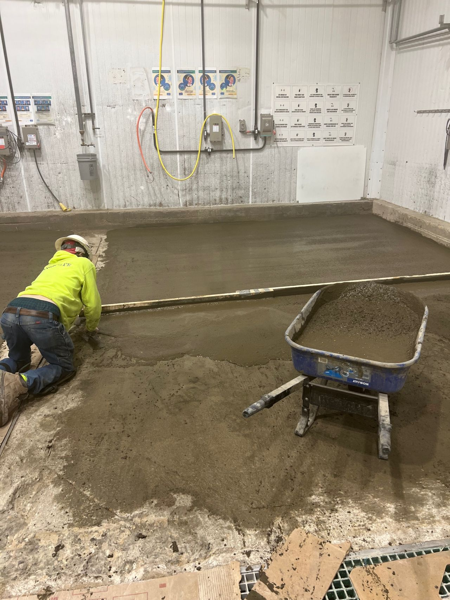

SaniBulk
Quick-Hardening Cement for Sloping, Leveling & Resurfacing

SaniBulk
Quick-Hardening Cement for Sloping, Leveling & Resurfacing
SaniBulk is a one-component, quick-hardening cement used for sloping, leveling, or resurfacing concrete floors where high early strength gain is required. Specially formulated to allow for fast-track SaniCrete flooring installations, SaniBulk delivers light traffic capability in as little as 1 hour under normal ambient conditions.
Whether you need to correct improper drainage pitch, rebuild deteriorated areas around floor drains, fill large voids, or build up transitions between areas — SaniBulk sets fast and can be top-coated with SaniCrete systems in as little as 4 hours.
Key Benefits
- Fast track application
- Very rapid setting — light traffic in 1 hour
- SaniCrete installations in as little as 4 hours
- Single component — just add water
- No primer required
- Shrinkage compensated
- Protein free — will not harbor bacteria
- Non gypsum based
- Excellent resistance to freeze/thaw cycles
Typical Applications
- Floor slope correction and re-pitching to drains
- Horizontal structural repairs
- Resurfacing and leveling
- Ramps
- Drain area rebuilding and repair
- Large void and depression fill
- Interior or exterior applications
- Freezers and refrigerated storage
| Technical Specifications | |
|---|---|
| Compressive Strength (1 hour) | 2,000 psi |
| Compressive Strength (2 hours) | 3,000 psi |
| Compressive Strength (1 day) | 6,500 psi |
| Compressive Strength (28 days) | 8,000 psi |
| Thickness | 1/2" to 6" |
| Foot Traffic (@ 70°F) | 1-2 hours |
| Full Traffic (@ 70°F) | 12 hours |
| Application Temperature | 40°F to 80°F |
| Freeze/Thaw Resistance | 100% RDM at 300 cycles |
| Color | Natural cement (grayish brown) |
📥 Downloads
Need Floor Slope Correction?
Standing water and drainage issues? SaniBulk can re-pitch your floors for proper drainage with minimal downtime. Contact us for a free assessment.
Contact Us →